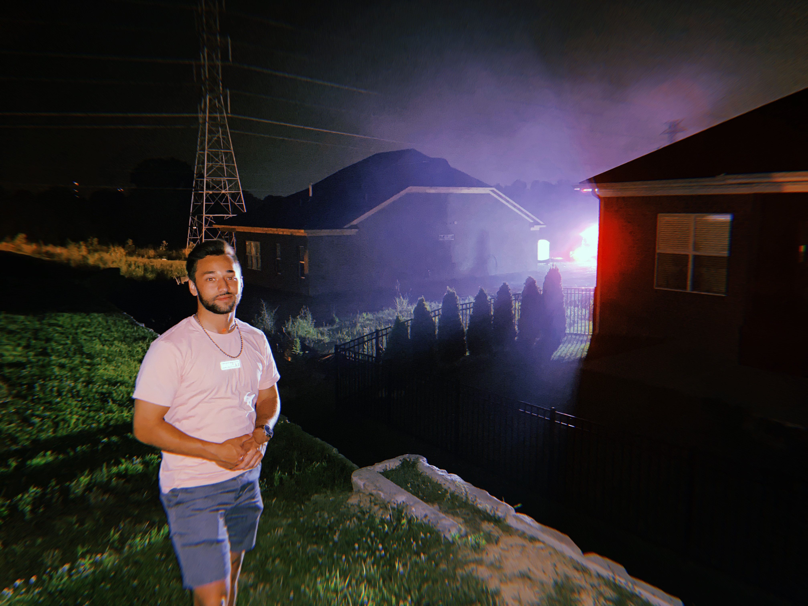

Kai Lelo | WDD 130
Hello! My name is Kai Lelo. I am an exercise physiology student currently living in Rexburg, Idaho. I enjoy anything with being outdoors, specifcally playing Soccer and snowboarding during the winter months. I have been married for 7 months to my beautiful wife, Sarah Beth, who comes from South Carolina. We have a 6 month old Goldendoodle named Rexi, after Rexburg where we met. Currently, I work at a company called SafeStreets USA where I manage operations within the company. We are the only authorized provider for ADT Security and have a customer base that spans across almost nearly every state, as well as Puerto Rico. I hope to either progress in this company to the point I can open up my own department, otherwise I will be attending grad school to become a Physical Therapist. If I follow the path of Physical Therapy, I will partner with my father to open our own clinic in Arizona. I look forward to the skills I can learn in this class as they will help me in either path that I choose to follow.
